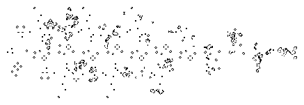

Patterns, Programs, and Links for Conway's Game of Life

Update (10-March-2019)
This is the primary location of the Game of Life
page that I began in 1995 while at
Johns Hopkins. Please update any previous URLs you may have.
It is roughly where I left it in 1998.
The web has exploded with Life and general cellular automata
resources since I began work on
this page. Some of the links have broken with the long passage of time,
and I have not attempted to clean them up since 2001.
The best starting point for Life information as of this writing is
The ConwayLife web site.
My email for life correspondence is
pbclifepage@gmail.com.
This address is current as of March 2019. The previous address has not worked for
years, so please try again if you want to reach me.
--Paul
Welcome to my page of odds and ends about Conway's Game of Life.
This page is an on-going work, which I hope to expand regularly.
This page now contains descriptions of files I have
made available for ftp, links to
Life resources available elsewhere on the Internet,
new results
and patterns not archived elsewhere,
and a browsable hypertext catalog of Alan Hensel's
archive of Life patterns, including a hypertext version of
his Life glossary. All the patterns except those in the
glossary are Java-animated, so if you have a Java-compatible
browser, such as Netscape 2.0, you may want to skip right
to the catalog and take a look.
I should mention that
while writing this page, I have generally assumed that the reader has
at least heard of the Game of Life. But if you haven't,
please don't let that stand in your way.
A brief explanation can already be found elsewhere on the Web.
Depicted at the top of the page--if you don't recognize it already--is the
classic puffer train. This is what it looks like after
800 generations, or applications of
Game of Life transition rules.
An exact duplicate of the initial pattern can be seen
at the right end of the above picture, displaced 400 cell
units from where it started, near the left end of the picture.
The term "puffer train" was coined to describe just this pattern,
because of the way it propagates forward while leaving a
trail of "smoke" behind it. Since the time of its
discovery, a great many
patterns have been discovered with similar properties, and
the term "puffer" has come to encompass the entire class.
The Life pattern used to generate this picture appears in
the browsable archive below.
It is called puftrain.lif.
My illustrated catalog of
Life patterns
provides the most convenient way yet to browse
Alan Hensel's extensive archive of Life patterns.
Linked to each pattern image is a page displaying comments,
and you can examine and download the entire pattern file
for viewing in a Life program on your machine.
Better yet, if your browser supports Java, an applet will
appear and start a Life animation automatically.
Alan's comments for
the patterns are often terse
(well, it's an awful lot of material to document)
and use a rather specialized
terminology. You may wish to refer to the
illustrated glossary
adapted from the one that
Alan provided in his distribution
A text version
of the glossary is provided
for those who are using a text-only browser,
or who do not have a fast connection.
For an even more comprehensive list of Life terms, see
Stephen Silver's lexicon.
These links delve into the theory, operation,
or design history of Life patterns and whole classes of patterns.
The format is mixed and includes articles I've written for
the page, as well as mail digests and contributed articles.
In contrast to
the pattern catalog, the emphasis here is on verbal explanation.
Numerous patterns are nonetheless included as examples, and
can be viewed in the applet or downloaded as ASCII files.
Dates denote time of addition to this page.
Since about 1990, I have been using the Internet regularly to communicate
with others interested in Conway's Game of Life.
The introduction of the World Wide Web protocol and the current availability
of browsers has greatly enhanced the Internet's
potential for this purpose.
The following list contains those Web resources best known to me,
along with a brief description. The list
is presented roughly in order, starting with what is readily
accessible and fun for the novice, and
progressing towards the more specialized and esoteric:
- A Web-page implementation of
John Conway's
Game of Life. This one is, of necessity,
slow and limited to a tiny cell universe, but it's
an ingenious application of check boxes and it even runs in lynx.
- Some patterns and Life implementations available in my ftp directory.
- Alan Hensel's zip-compressed archive of some of the world's most
remarkable Life
patterns. To see these in action,
you need a fast
Life simulator that works with Hensel's format. Some useful
documentation is included along with the patterns.
- Alan Hensel's lightning-fast
MS/DOS
implementation of Life. Conveniently enough, this program works with his
pattern format.
- Compressed source for
Xlife 3.0, an X-windows implementation of Life. This accepts
Hensel's format as well, but expects pattern files to have a ".life" suffix.
- A semi-official upgrade
Xlife 3.5 at
Achim Flammenkamp's web site. Enhancements are box cut-and-paste
commands that I added but never released, and sub-pixel zooming by
Achim for viewing extremely large patterns.
- Stephen Silver's comprehensive Life Lexicon.
- X Motif source code I wrote for a 4-color version of life.
The rules governing live and dead cells are the usual ones. However
a cell can be one of four different colors, and these colors change
according to a majority rule. This is distributed as a
gzipped Unix tape archive.
- My Java still life generator,
which uses an iterative approach to find patterns that
are stable under life rules.
- David Bell's definitive treatise on
Spaceships in Conway's Game of Life, originally distributed as a Usenet
article in flat ascii text, but since converted by Joerg Heitkoetter into
an HTML document available through the Web.
- A Unix shell archive of David Bell's
search program
that finds low-period oscillators and
spaceships.
Many of the spaceships discussed in Bell's article were originally
found with just such a search program.
Note that this is the 5 Feb 94 release, which
contains features not found in the older versions archived elsewhere.
- The Usenet newsgroup comp.theory.cell-automata, which is devoted
to the more general subject of cellular automata,
but where Game of Life discussions are not unheard of.
- My December '94 Usenet article containing C source code for a
collision-enumeration program.
Unfortunately, my program is not very user-friendly. It works
with files and
command-line arguments, and won't give you much of anything unless
you know just what you are looking for. It has, however, resulted in
some surprising finds. This is mainly of interest
to the hardcore Life enthusiast with a lot of patience and
a high tolerance for frustration.
A great place to start looking for Game of Life information is the
Open Directory Life index.
Here's my own random smattering of related links.
- Mark Niemiec's
massive
compendium of glider syntheses, still life enumerations, and other
information for the true enthusiast.
- Robert Wainwright's
LIFEPAGE.
This page collects information about Life patterns and results, as well
as an index to LIFELINE, a newsletter edited by Wainwright
from 1971 through 1973 in which many important results first appeared.
-
Achim's
Game of Life Page. This page, maintained by Achim Flammenkamp, contains
patterns, life results, and software,
including Xlife 3.5, a newer release of Xlife containing some
user-interface enhancements.
-
Alan Hensel's
fast,
powerful life applet runs patterns in his collection
and (unlike mine) also works interactively.
-
H. Koenig's page of
Game of
Life Information, which includes a listing of glider constructions.
-
A compilation
of Life information in
Eric Weisstein's
Treasure
Troves.
Here is a sampling of related resources. I have not had
the time to keep this list up to date ever since starting it in 1995.
However, I am confident that starting here,
almost everything can be found just
a few links away.
Programs that can read patterns in Alan Hensel's archive
-
Life32
for Windows 95/98/NT by Johan Bontes.
Alan Hensel calls this
"by far, the best Life program
for 32-bit Windows ... extremely fast, powerful, and easy to use."
I've seen this demonstrated, and concur with Alan.
- W-Life,
ported by Glen Summers, for PC's running MS-Windows 3.1.
A decent port of Xlife to Microsoft Windows. Note that this is
a port of Xlife 2.0, released in 1989. I do not have an
up to date link for this software.
-
WinLife
by John Harper, for PC's running MS-Windows 3.1.
Probably the best overall Windows Life program.
-
LifeLab
by Andrew Trevorrow, for Macs -- Mac Plus to Power Mac.
Very powerful. Autodetects gliders and oscillators, has
sophisticated editing, does automated searches for new patterns.
Artificial Life Resources
It is the source of
much, occasionally rancorous,
debate
as to whether Conway's Game of Life
and the field of artificial life have anything to do with one
another, apart from the somewhat coincidental name correspondence.
Both involve the study of complex, seemly unpredictable systems, so
the connection is not entirely arbitrary. In any case, the
following resources are in themselves interesting, and may help
you find additional resources related to the Game of Life.
- The
Live Artificial Life Page contains links to animations
of artificial life systems on the Web.
- Zooland
is an extensive index to artificial life resources on the Internet.
- comp.ai.alife is a Usenet
group for the discussion of artificial life.
- David Griffeath's
Primordial Soup
Kitchen contains interesting patterns produced by all sorts of
complex systems, including the Game of Life.
Contributors
The above links were contributed by Alan Hensel,
Joerg Heitkoetter, and David Griffeath.
Not everything to do with the Game of Life can be found on
the Internet, at least not yet. Alan Hensel has compiled
a bibliography
of books and articles on the Game of Life.
This page is maintained by
Paul Callahan (last update: 10-March-2019).